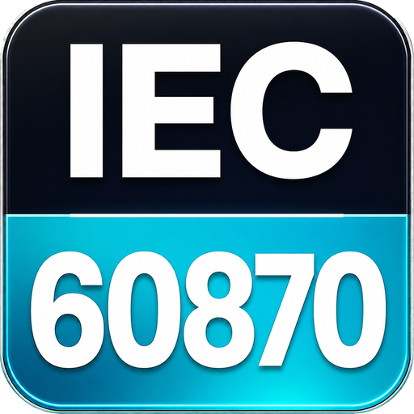

IEC-101 ACD and DFC
Understand the two link-layer bits that explain why a slave has pending data or is temporarily busy.
Read page
ARIEC60870IEC 60870 protocol testerField Wiki
If the trace says ACD, DFC, Class 1, Class 2, ACTCON, ACTTERM, CA, IOA, STARTDT, or TESTFR, this wiki explains what the word means, what a normal sequence looks like, and how to use ARIEC60870 to see the evidence.
IEC-101
IEC-101 issues often look simple from the outside and messy inside the frame trace. These pages focus on the parts that usually explain the problem.
Understand the two link-layer bits that explain why a slave has pending data or is temporarily busy.
Read pageSee how the master should poll normal data and drain high-priority data without flooding the link.
Read pageFollow select, execute, ACTCON, feedback, and ACTTERM from a practical field point of view.
Read pageSeparate link-layer addressing from ASDU addressing before chasing the wrong problem.
Read pageLearn the normal IEC-101 startup snapshot flow and the symptoms when it does not finish.
Read pageIEC-103 / IEC-104 / Findings
Read STARTDT, STOPDT, TESTFR, I-frame, S-frame, U-frame, and sequence behavior.
Read pageUnderstand why relay protocol evidence looks different from telecontrol points.
Read pageSee how ARIEC60870 turns raw symptoms into problem, proof, and practical next step.
Read page